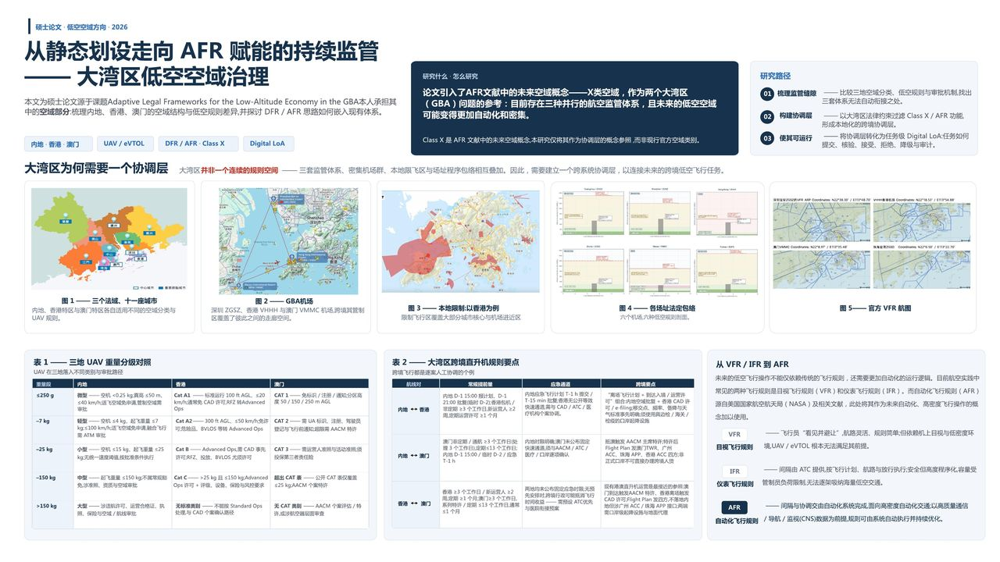
01 / Thesis
大湾区面向自动化运行的空域与跨境协调层
引入自动飞行规则（AFR）文献中的“X 类空域”这一未来空域概念，作为应对粤港澳大湾区两大挑战的理论参考——三套并行的航空监管体系，以及未来自动化、高密度的低空运行；在此基础上探讨如何设计适用于大湾区的跨境低空协调层。
打开项目 →
访谈 · Persona
旅程图 · KANO
机会点 · 定位
功能取舍 · 竞品
无人机 · eVTOL
VR · 多端方案
Arduino · TouchDesigner
UE · 3D 打印 · AI 编程
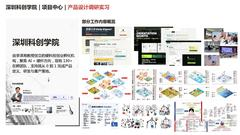
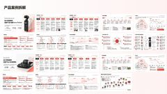
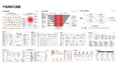
场景图 · 工具图 · 记录站 · 调研报告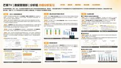
用户画像 · 留存付费 · 报告图表
引入自动飞行规则（AFR）文献中的“X 类空域”这一未来空域概念，作为应对粤港澳大湾区两大挑战的理论参考——三套并行的航空监管体系，以及未来自动化、高密度的低空运行；在此基础上探讨如何设计适用于大湾区的跨境低空协调层。
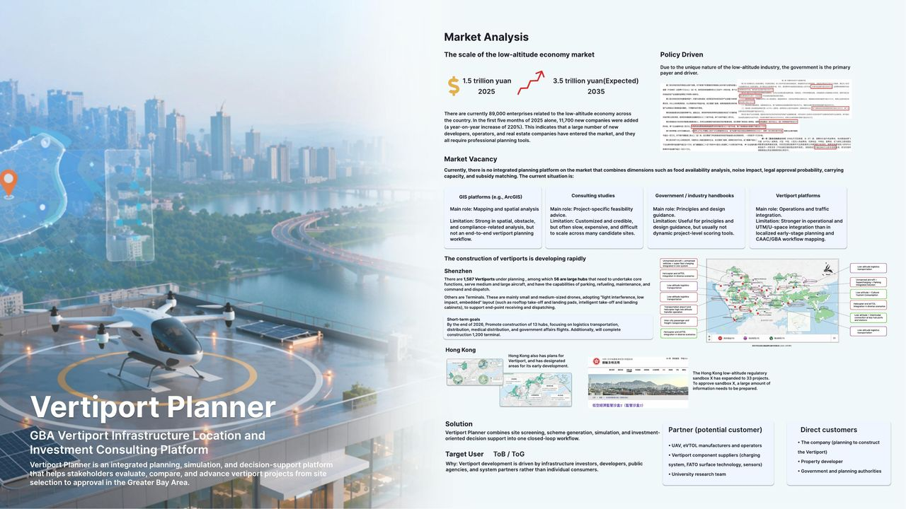
面向政策驱动的低空经济市场，把城市数据、空域条件、法规约束、基础设施与机型要求整合为统一评分框架，输出候选场址排序、得分拆解与规划建议，支撑从选址到审批的决策链路。
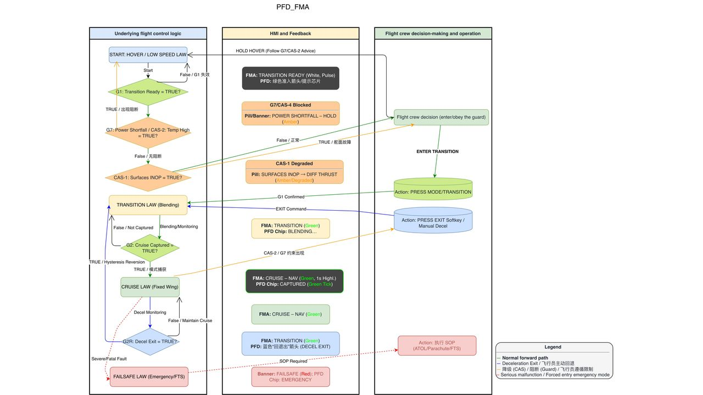
梳理悬停 / 转换 / 巡航的模式切换逻辑，定义每个阶段必须一眼可见的关键信息；确定信息分组与颜色编码，按飞行阶段分级过滤提示，只保留当下相关内容以降低操作负荷。
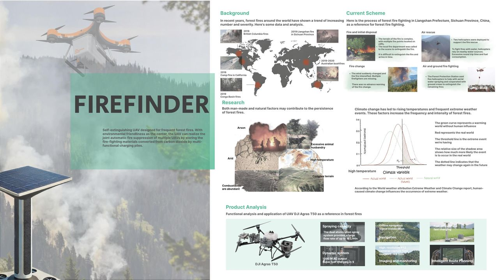
面向森林火灾救援场景，拆解监测预警、火点定位、空中投送与续航补给等核心任务，设计由监测无人机、灭火无人机、充能桩与灭火材料转换模块组成的作业闭环。
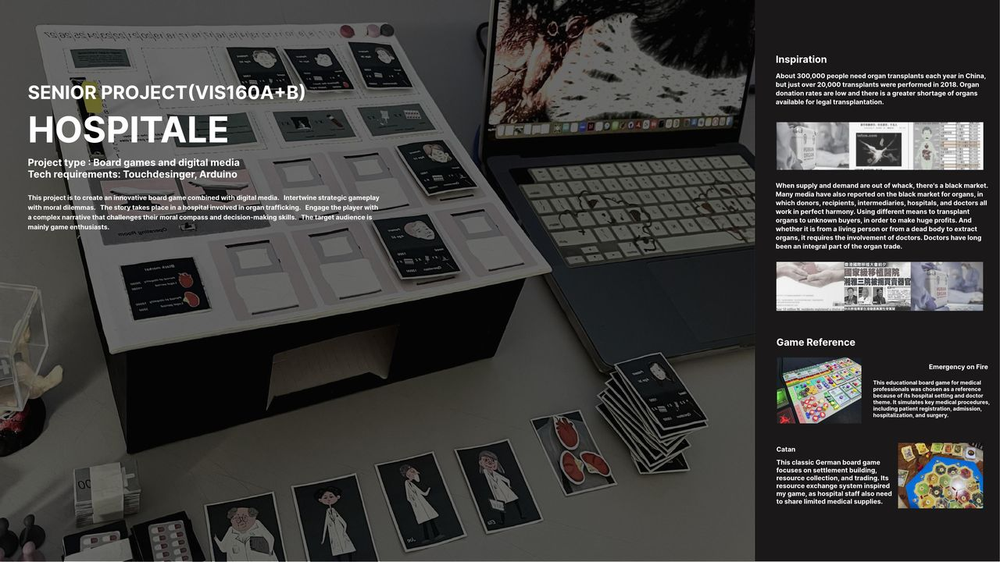
以桌游表达医疗体系中的伦理冲突与决策压力，围绕角色、信息获取、选择路径与反馈结果设计交互流程；用 TouchDesigner 与 Arduino 实现数字界面与实体装置联动。
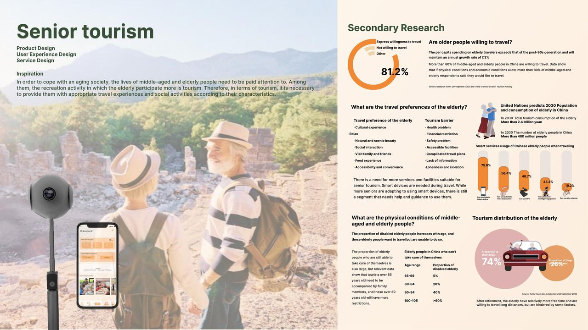
通过深度访谈、用户画像与旅程图识别中老年用户在出行与记录环节的痛点，设计旅游服务 App 与配套 VR 相机方案，覆盖行程规划、社区互动与旅途记录。
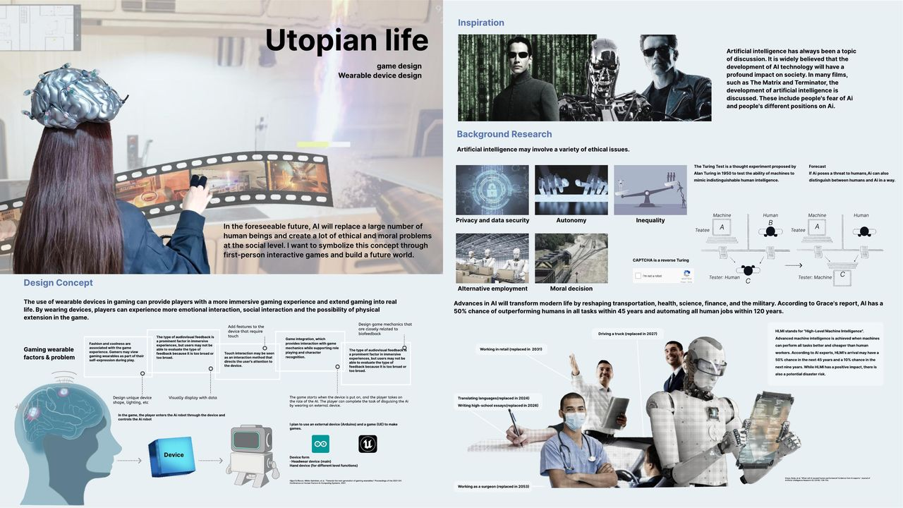
围绕 AI 伦理与未来社会议题设计游戏机制、任务流程与场景体验，用 UE 搭建关卡；结合 Arduino 与 3D 打印制作穿戴式装置，实现玩家实体动作与游戏反馈联动。
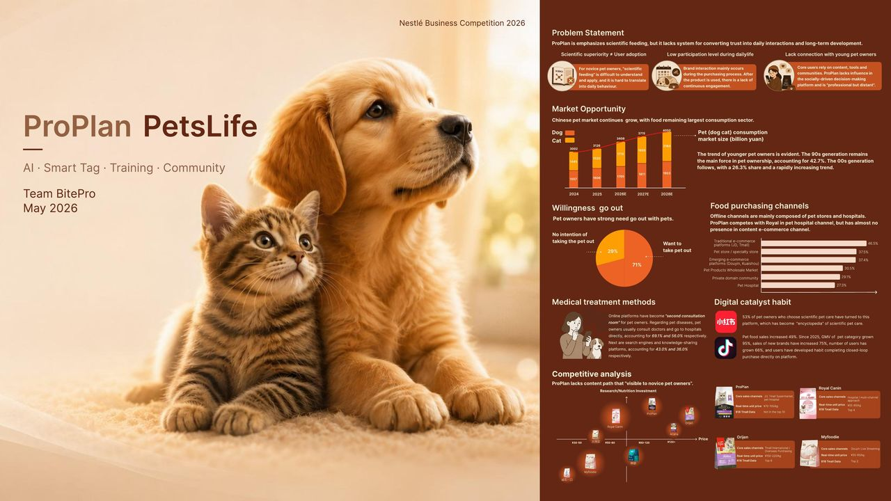
针对"科学喂养专业但疏离"的品牌问题，拆解新手养宠人群的认知与行为断点，设计把科学喂养转化为日常互动与长期陪伴的产品方案（雀巢商业竞赛）。
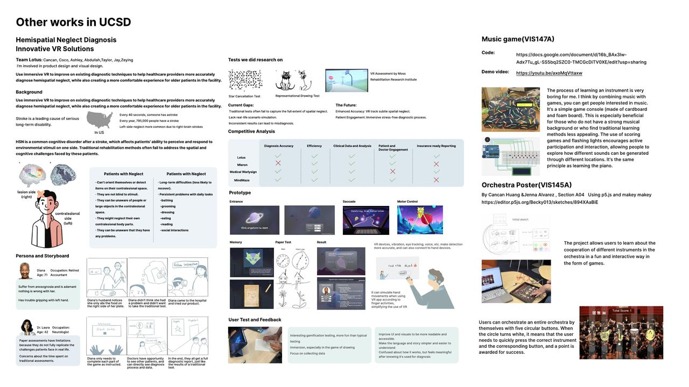
半侧空间忽略（Hemispatial Neglect）游戏化 VR 辅助诊断方案，以及 VIS147A 音乐游戏等在 UCSD 期间的交互与实验性作品合集。